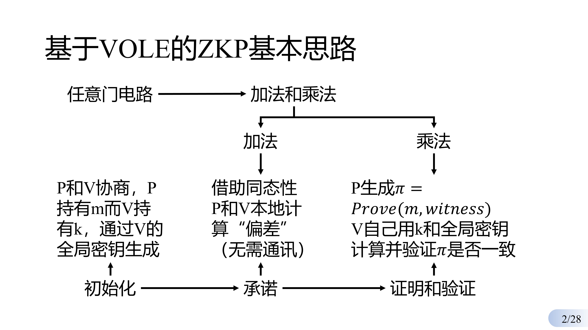
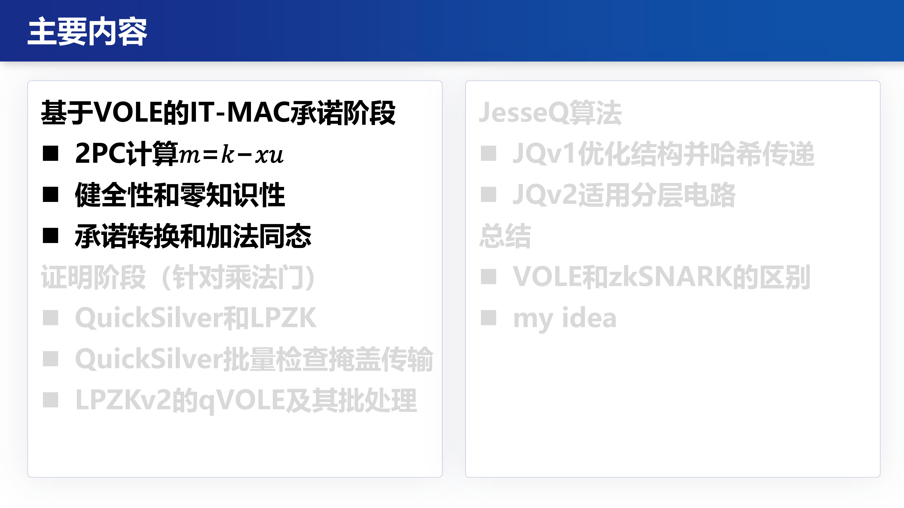
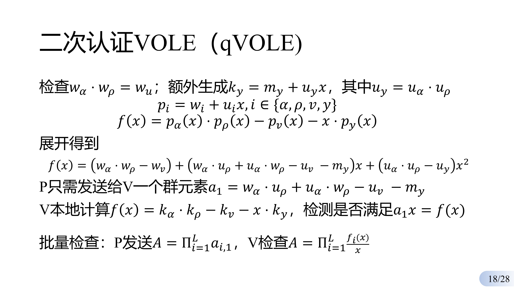
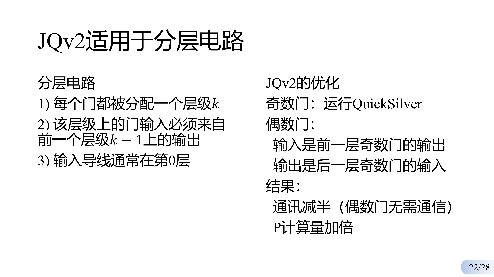
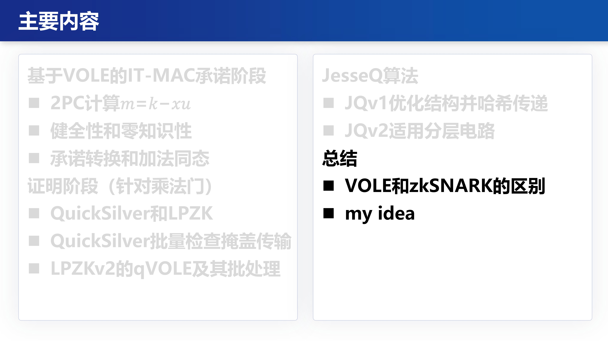

JesseQ第一次组会讲解
这次要讲的是25年的一篇S&P
JesseQ，是一种基于VOLE的零知识证明，你问VOLE是什么？你知道它有一定的同态性就行

它的基本逻辑是：对于一个算数电路，我们把它抽象为只有乘法和加法。最初P和V协商（Setup初始化，也是offline阶段）锁定V的全局私钥\(x\)（指定验证者）；承诺阶段是通过计算加法门来实现（后面会给出具体操作），证明和验证阶段是针对乘法门计算（核心和精髓）。

这是目录喵


首先是一个叫IT-MAC的东东，甭管IT是什么，反正MAC就是你知道的消息认证码的意思
它的公式是\(m=k-x\cdot u\)，具体含义见PPT，描述挺详细的我觉得

通过2PC来得到最初始的\(m=k-u\cdot x\)，后续每次再生成直接利用同态性即可


这里有举具体数字的例子


这里红色是不能获取到的，可以看出无法解出对方的私有内容

利用IT-MAC的加法同态性，对加法进行承诺并构建很多组\(m_i=k_i-x\cdot u_i\)（无须交互，但算法瓶颈也在这，因为每个门都需要发送一个\(d\)）
加法操作被称为是“免费的”


接下来是乘法门，借助多项式证明的，PPT也很清楚 不再赘述

原本每个门都需要传\(a_0,a_1\)，现在有了QuickSilver就只需要传每个门“揉“在一起的结果

这里需要订正一下，这里的掩码传输并不安全，应该2PC来生成（下次具体讲）




JQv1的贡献在于，1.计算上只剩了常数项 2.哈希传输 减少了通讯量


JQv2本质上是把偶数层需要通讯的，让奇数层去验证，代价是P需要多计算
但是我还没完全看懂，下次继续讲






后一半感觉挺清楚的，留个PPT在这，就不多讲了，讲也是念PPT了
后续再看了论文，确定上述内容对应JesseQ论文的第一章，后面的工作是把JesseQ讲清楚一些